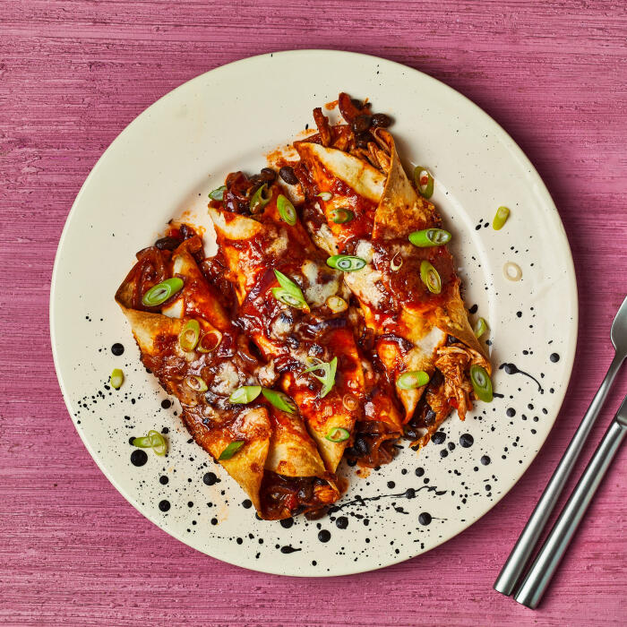

Chicken Chipotle Enchiladas

Chicken Chipotle Enchiladas
Ingredients
- Garlic clove x4
- Spring onion x4
- Chicken thighs (500g)
- Cheddar cheese (80g)
- Chicken stock (11g)
- Tomato paste (64g)
- Ground cumin (2tsp)
- Red onion x2
- Black beans (780g)
- Cayenne pepper (1tsp)
- Dried oregano (2tsp)
- Chipotle paste (40g)
- Plain tortillas (12pcs)
Steps
- Preheat the oven to 180C, then take the chicken out of the fridge, open the packet and let it air. Heat a large, wide-based pan (preferably non-stick with a matching lid) with a drizzle of vegetable oil over a high heat. Once hot, add your chicken breast strips with a pinch of salt and pepper and cook for 3 min on each side or until browned.
- Once browned, add your ground cumin, dried oregano and a couple splashes of cold water to the pan and cook, covered, for a further 10-12 min or until the chicken is cooked through (no pink meat!). Meanwhile, peel and finely slice your red onions. Peel and finely chop (or grate) your garlic. Once the chicken is cooked through, transfer to a clean board (reserve the pan) and shred it apart, using two forks.
- Boil a kettle. Return the pan to a medium heat and add 40g butter. Once the butter has melted, add the sliced red onion and chopped garlic and cook for 4-5 min or until softened. Once softened, add 30g flour and your cayenne pepper and stir with a wooden spoon for 3-4 min or until a paste forms - this is your roux.
- Add your tomato paste, chicken stock mix and chipotle paste. Gradually whisk in 680ml boiled water, a little at a time, and cook for 5 min (stirring occasionally) or until a smooth, thick sauce remains - this is your chipotle sauce. Meanwhile, drain and rinse your black beans.
- Remove 1/3 of the chipotle sauce to a small pot - this is your enchilada topping. Add the drained black beans and pulled chicken to the remaining sauce in the pan and give it a good mix up - this is your chicken & black bean filling.
- Reheat the enchilada topping over a high heat for 2-3 min or until the sauce has thickened to a double cream consistency. Meanwhile, grate your cheddar cheese. Trim and slice your spring onions finely. Grease an oven-proof dish with a little vegetable oil.
- Divide the chicken & black bean filling between your tortillas. Roll each tortilla up and place them in the oven-proof dish. Top with the enchilada topping and grated cheese. Put the dish in the oven for 12-15 min or until the tortillas are crispy and the cheese has melted - these are your cheesy chipotle chicken enchiladas. Serve the cheesy chipotle chicken enchiladas and garnish with the sliced spring onion. Enjoy!
Home